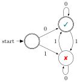

source("../dsan-globals/_globals.r")Week 8: Markov Models
DSAN 5100: Probabilistic Modeling and Statistical Computing
Section 03
Class Sessions
Motivation
\[ \DeclareMathOperator*{\argmax}{argmax} \DeclareMathOperator*{\argmin}{argmin} \newcommand{\bigexp}[1]{\exp\mkern-4mu\left[ #1 \right]} \newcommand{\bigexpect}[1]{\mathbb{E}\mkern-4mu \left[ #1 \right]} \newcommand{\convergesAS}{\overset{\text{a.s.}}{\longrightarrow}} \newcommand{\definedas}{\overset{\text{def}}{=}} \newcommand{\definedalign}{\overset{\phantom{\text{def}}}{=}} \newcommand{\eqeventual}{\overset{\mathclap{\text{\small{eventually}}}}{=}} \newcommand{\Err}{\text{Err}} \newcommand{\expect}[1]{\mathbb{E}[#1]} \newcommand{\expectsq}[1]{\mathbb{E}^2[#1]} \newcommand{\fw}[1]{\texttt{#1}} \newcommand{\given}{\mid} \newcommand{\green}[1]{\color{green}{#1}} \newcommand{\heads}{\outcome{heads}} \newcommand{\iid}{\overset{\text{\small{iid}}}{\sim}} \newcommand{\lik}{\mathcal{L}} \newcommand{\loglik}{\ell} \newcommand{\mle}{\textsf{ML}} \newcommand{\nimplies}{\;\not\!\!\!\!\implies} \newcommand{\orange}[1]{\color{orange}{#1}} \newcommand{\outcome}[1]{\textsf{#1}} \newcommand{\param}[1]{{\color{purple} #1}} \newcommand{\pgsamplespace}{\{\green{1},\green{2},\green{3},\purp{4},\purp{5},\purp{6}\}} \newcommand{\prob}[1]{P\left( #1 \right)} \newcommand{\purp}[1]{\color{purple}{#1}} \newcommand{\sign}{\text{Sign}} \newcommand{\spacecap}{\; \cap \;} \newcommand{\spacewedge}{\; \wedge \;} \newcommand{\tails}{\outcome{tails}} \newcommand{\Var}[1]{\text{Var}[#1]} \newcommand{\bigVar}[1]{\text{Var}\mkern-4mu \left[ #1 \right]} \]
The Course So Far
- Logic: Reasoning about T/F statements using and and or
- \(\rightarrow\) Set Theory: Reasoning about collections of objects and their union and intersection
- \(\rightarrow\) Probability: Assigning “likelihood values” in \([0,1]\) to logical/set-theoretic statements about outcomes
- \(\rightarrow\) Random Variables: Doing math (beyond and and or) with the probabilities of these uncertain outcomes
- All have been reasoning about uncertainty in more and more complex ways!
The New Dimension: Evolution Through Time
- Markov models are a stepping-stone towards full-on time series analysis: reasoning about uncertainty over time
- So why are time series the topic of an entire course, while Markov models only the topic of one week in DSAN5000?
Recall: Definition of Conditional Probability
\[ \Pr(A \mid B) \definedas \frac{\Pr(A, B)}{\Pr(B)} \genfrac{}{}{0pt}{}{\leftarrow A\text{ and }B\text{ happen}}{\leftarrow \text{In world where }\Omega = B} \]
The Markov Property
\[ P(\text{future} \mid \text{present}, {\color{orange}\text{past}}) = P(\text{future} \mid \text{present}) \]
The Markov Assumption
Often stated in many different (confusing) ways, but think of anterograde amnesia:
Keeping Track of States
- Since Markov models come more from engineering than “pure” math/probability, we have “fancier” objects we’re keeping track of, rather than just Random Variables
- We now keep track of the state of a system over time: this could be a single RV, but could be a collection of multiple (potentially dependent) RVs
What Information Should We Keep Track Of?
- Sometimes answer seems “obvious”, lulls us into false sense of confidence (that we don’t have to think too hard about it)1
| System | State Space |
|---|---|
| Chess | Position of each piece, whose turn it is |
| Indoor Robot | Model of room + objects inside it |
| Predator-Prey Ecosystem | Relative species populations |
| Move Left/Move Right Game | ? |
| Weather Prediction | ? |
| Music | ? |
- Tension between too little information (cannot model phenomena of interest) vs. too much information (solving model becomes intractable)
Modeling Music: Where is the Downbeat?
State Space Choice \(\rightarrow\) Information Loss
- Recall the Move Left/Move Right Game (especially from Lab 4 Prep)
| History vector | Position | Steps | #L | #R |
|---|---|---|---|---|
| \(()\) | \(x = 0\) | 0 | 0 | 0 |
| \((L,R)\) | \(x = 0\) | 2 | 1 | 1 |
| \((R,L)\) | \(x = 0\) | 2 | 1 | 1 |
| \((R,L,R,\) \(~L,R,L)\) |
\(x = 0\) | 6 | 3 | 3 |
| \((L)\) | \(x = -1\) | 1 | 1 | 0 |
| \((L,L,R)\) | \(x = -1\) | 3 | 2 | 1 |
Markov Models
Finite-State Automata
(Deterministic!) Only “accepts” strings with even number of 1s:

| Input String | Result | Input String | Result |
|---|---|---|---|
| \(\varepsilon\) | ✅ | 01 |
|
0 |
✅ | 10 |
|
1 |
1000000 |
||
00 |
✅ | 10000001 |
✅ |
- …But we’re trying to model probabilistic evolution!
Enter Markov Chains


\[ \begin{array}{c c} & \begin{array}{c c c} 1 & 2 & 3 \\ \end{array} \\ \begin{array}{c c c}1 \\ 2 \\ 3 \end{array} & \left[ \begin{array}{c c c} 0 & 1/2 & 1/2 \\ 1/3 & 0 & 2/3 \\ 1/3 & 2/3 & 0 \end{array} \right] \end{array} \]
\[ \begin{array}{c c} & \begin{array}{c c c} 1 & 2 & 3 \\ \end{array} \\ \begin{array}{c c c}1 \\ 2 \\ 3 \end{array} & \left[ \begin{array}{c c c} 1/2 & 1/3 & 1/6 \\ 1/10 & 1/2 & 2/5 \\ 1/8 & 3/8 & 1/2 \end{array} \right] \end{array} \]

PageRank
PageRank (Matrix Magic)
- What is the relevance of this abstract topic? ‚Ķü§ë
library(readr)
library(ggplot2)
goog_df <- read_csv("assets/google_yearly_revenue.csv")
ggplot(goog_df, aes(x=year, y=revenue_billions)) +
geom_bar(stat="identity", fill=cbPalette[1]) +
labs(
title = "Google Yearly Revenue, 2002-2022",
x = "Year",
y = "Revenue (Billion USD)"
) +
dsan_theme("full")- PageRank = The “spark” that ignited the Google flame
PageRank Visualized
- Nodes = Webpages, Edges = Links

- Goal: Rank the relative “importance” of a site \(S_i\), taking into account the importance of other sites that link to \(S_i\)
- “Important” sites: linked to often, and linked to often by other important sites
Chickens and Eggs
- Paradoxical at first: how are we supposed to figure out the importance of a site \(S_i\), when that’s determined by
- the importance of sites \(S_j\) that link to \(S_i\), which is determined by
- the importance of sites \(S_k\) that link to sites \(S_j\), which is determined by
- the importance of the sites \(S_\ell\) that link to those sites \(S_k\), which is determined by…
- the importance of sites \(S_k\) that link to sites \(S_j\), which is determined by
- the importance of sites \(S_j\) that link to \(S_i\), which is determined by
\[ \begin{align*} \mathsf{Importance}(S_i) &= f(\mathsf{Importance}(S_{j \rightarrow i})) = f(f(\mathsf{Importance}(S_{k \rightarrow j \rightarrow i}))) \\ &= f(f(f(\mathsf{Importance}(S_{\ell \rightarrow k \rightarrow j \rightarrow i})))) = \cdots \end{align*} \]
Sanity hint: Remember infinite sums from calculus! They can converge, despite having infinitely-many terms… This is something like that, but for recursion (the mathematical term for an object whose definition refers to itself)
Resolving Recursive Definitions
- We can compute this importance ranking, despite its recursive definition!
- Recall, for example, the Fibonacci sequence: \(1, 1, 2, 3, 5, 8, 13, 21, \ldots\)
- Defined recursively!
\[ f(n) = \begin{cases} 1 & n = 1\text{ or }n = 2 \\ f(n-2) + f(n-1) & n > 2 \end{cases} \]
And yet, a guy named Bernoulli figured out
\[ f(n) = \frac{\varphi^n - \psi^n}{\varphi - \psi} = \frac{\varphi^n - \psi^n}{\sqrt{5}}, \]
where \(\varphi\) is the “Golden Ratio” \(\frac{1 + \sqrt{5}}{2}\) and \(\psi\) its conjugate \(\frac{1 - \sqrt{5}}{2}\).
The PageRank Process
- Every site starts with equal PageRank score: \(r^{(0)}_1 = r^{(0)}_2 = r^{(0)}_3 = \frac{1}{3}\).
- Each link \(S_i \rightarrow S_j\) is a vote of confidence that \(S_i\) is giving to \(S_j\)
- At each time \(t\), a site \(S_i\) “spends” whatever voting power it currently has (\(r^{(t)}_i\)) on the sites it links to.
- \(S_1\) casts one vote for itself and one vote for \(S_2\), thus spending \(\frac{1}{2}\) of its total PageRank on itself and \(\frac{1}{2}\) of its total PageRank on \(S_2\).
- State of the process at time \(t\): \(\mathbf{r}^{(t)} = \begin{bmatrix}r^{(t)}_1 & r^{(t)}_2 & r^{(t)}_3\end{bmatrix}^\top\)
- Can form a matrix specifying how this state evolves from time \(t\) to time \(t+1\)!
\[ \mathbf{E} = \begin{bmatrix} \frac{1}{2} & \frac{1}{2} & 0 \\ \frac{1}{2} & 0 & 1 \\ 0 & \frac{1}{2} & 0 \end{bmatrix} \; \leadsto \; \mathbf{r}^{(t+1)} = \mathbf{E}\mathbf{r}^{(t)} \]
- Given the “\(S_1\) casts one vote for itself…” part, can you say exactly what \(S_1\) will “spend” on itself and on \(S_2\) at time \(t = 0\) (in the first round)?
- We can use \(\mathbf{E}\) to figure out the state at each step, starting from \(t = 0\)!
\[ \begin{array}{c@{}c@{}c@{}c@{}c@{}c@{}c} \mathbf{r}^{(1)} & = & \mathbf{E}\mathbf{r}^{(0)} & = & \begin{bmatrix} \frac{1}{2} & \frac{1}{2} & 0 \\ \frac{1}{2} & 0 & 1 \\ 0 & \frac{1}{2} & 0 \end{bmatrix}\begin{bmatrix} \frac{1}{3} \\ \frac{1}{3} \\ \frac{1}{3}\end{bmatrix} & = & \begin{bmatrix} \frac{1}{3} \\ \frac{1}{2} \\ \frac{1}{6} \end{bmatrix} \\ ~ & ~ & ~ & ~ & ~ & \swarrow & ~ \\ \mathbf{r}^{(2)} & = & \mathbf{E}\mathbf{r}^{(1)} & = & \begin{bmatrix} \frac{1}{2} & \frac{1}{2} & 0 \\ \frac{1}{2} & 0 & 1 \\ 0 & \frac{1}{2} & 0 \end{bmatrix}\begin{bmatrix}\frac{1}{3} \\ \frac{1}{2} \\ \frac{1}{6}\end{bmatrix} & = & \begin{bmatrix}\frac{5}{12} \\ \frac{1}{3} \\ \frac{1}{4}\end{bmatrix} \\ ~ & ~ & ~ & ~ & ~ & \swarrow & ~ \\ \mathbf{r}^{(3)} & = & \mathbf{E}\mathbf{r}^{(2)} & = & \cdots & ~ & ~ \end{array} \]
Matrix Magic
- (1) Won’t we just have to run this forever? (2) How do we know it’ll converge to something?
- Answers: (1) No! (2) because Markov matrix magic!
- “Steady state” = state where \(\mathbf{r}^{(t)} = \mathbf{r}^{(t+1)} = \mathbf{r}^{(t+2)} = \cdots \definedas \mathbf{r}^*\). But this means
\[ \mathbf{r}^{(t+1)} = \mathbf{r}^{(t)} \iff \mathbf{E}\mathbf{r}^{(t)} = \mathbf{r}^{(t)} \iff \mathbf{E}\mathbf{r}^* = \mathbf{r}^* \]
- This \(\mathbf{r}^*\) is (by definition!) an Eigenvector of \(\mathbf{E}\) with Eigenvalue \(\lambda = 1\)!2
- In my opinion, along with e.g. insolubility of the quintic, this is maybe the most mind-blowing case of math magic :3
Solving the Matrix Magic
Since we already know the Eigenvalue of interest, \(\lambda = 1\), all that’s left is solving for its corresponding Eigenvector:
\[ \mathbf{E}\mathbf{r}^* = \mathbf{r}^* \iff \mathbf{E}\mathbf{r}^* - \mathbf{r}^* = \mathbf{0} \iff (\mathbf{E} - \mathbf{I})\mathbf{r}^* = \mathbf{0} \]
Written out, we see that this gives us a system of linear equations:
\[ \begin{bmatrix} \frac{1}{2} & \frac{1}{2} & 0 \\ \frac{1}{2} & 0 & 1 \\ 0 & \frac{1}{2} & 0 \end{bmatrix}\begin{bmatrix}r^*_1 \\ r^*_2 \\ r^*_3\end{bmatrix} = \begin{bmatrix}0 \\ 0 \\ 0\end{bmatrix} \iff \begin{array}{ccccccc}\frac{1}{2}r^*_1 & + & \frac{1}{2}r^*_2 & ~ & ~ & = & 0 \\ \frac{1}{2}r^*_1 & ~ & ~ & + & r^*_3 & = & 0 \\ ~ & ~ & \frac{1}{2}r^*_2 & ~ & ~ & = & 0\end{array} \]
which we can solve however we want!
To handle the fact that this system is underspecified, impose additional restriction that \(r^*_1 + r^*_2 + r^*_3 = 1\), so that the ranks form a probability distribution
The Point of All This
- The final restriction \(r^*_1 + r^*_2 + r^*_3 = 1\) ensures that the resulting PageRank values form a probability distribution
- This is called the Stationary Distribution of the Markov chain: represents the probability that a random walker through the chain will be at page \(S_i\) at a given time!
- Equivalently: expected proportion of total walking time a random-walker will spend at each node
- Every Markov chain has a Stationary Distribution! This fact has cool implications even above and beyond the Google $$$ implications üòú
Footnotes
To snap out of this lull, keep in mind that engineering/nonlinear dynamical systems programs have entire courses just on state space representations↩︎
This is because an Eigenvalue-Eigenvector pair for a matrix \(\mathbf{M}\) is a vector \(\mathbf{v}\) and scalar value \(\lambda\) which satisfy \(\mathbf{M}\mathbf{v} = \lambda \mathbf{v}\). In words: the result of (left) matrix-multiplying \(\mathbf{v}\) by \(\mathbf{M}\) is the same as scalar-multiplying \(\mathbf{v}\) by a factor of \(\lambda\). In our case the Eigenvector is \(\mathbf{r}^*\) and the Eigenvalue is \(\lambda = 1\), since \(\mathbf{E}\mathbf{r}^* = 1 \cdot \mathbf{r}^*\).
For the math-curious, there are lots of fun results from matrix theory which assure us that \(\mathbf{E}\) is guaranteed to have principal eigenvalue \(\lambda = 1\) üíÜ‚Ü©Ô∏é